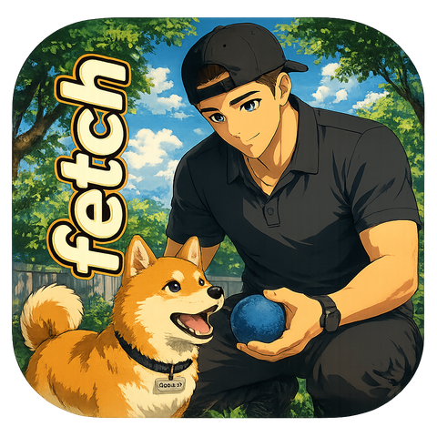

I architect and ship multi-platform VR/AR training experiences in Unity, from the interaction systems and real-time multiplayer down to the build pipelines and internal tooling that hold it all together.
I build immersive training software in Unity, and the infrastructure that ships it. Over the past stretch I have taken a single XR training product across four platforms, Quest/XR, Android, Windows, and iOS, each with its own graphics API, build configuration, and content pipeline.
The thread running through all of it is tooling. When merging a dozen contributor branches started breaking scenes, I built a GUID conflict detector and remapper to catch the problems before the merge instead of after. When the team needed authoring and sync workflows, I built those too. I would rather spend a day building the tool that saves the team a week than just do the week.
I came to engineering from teaching math, which is probably why I care so much about making hard things legible: failing safe, turning scary pipelines into repeatable steps, and instrumenting for the data that actually tells you something. In XR, that means measuring where people look, not just what they tap.
Lately a lot of that tooling runs on AI and a stack of APIs. I wire up Anthropic Claude for structured-output proofing, rewriting and code, ElevenLabs for narration, Whisper for transcription, and Cognitive3D for spatial analytics, alongside the platform APIs (Atlassian Forge, Supabase, Vimeo, Teams, GitHub) that stitch the pipeline together. My storyboard editor alone orchestrates four of them inside a single Confluence macro.
A multi-platform XR training platform and the systems around it. Built in Unity with XR Interaction Toolkit, Photon Fusion, Addressables, and a lot of purpose-built tooling.
Shipped the same XR training app to Quest/XR, Android, Windows, and iOS from a single Unity project. Per-platform graphics APIs (Vulkan, GLES3, IL2CPP, DirectX), build configs, and Addressables profiles, including tracking down a Vulkan black-screen and falling back to GLES3 on Android.
Architected remote module loading with Unity Addressables and Cloud Content Delivery, so the app installs small and pulls content only when it is opened. Separate CCD buckets and profiles per platform, with build-time checks to stop silent catalog mismatches.
A GUID conflict detector and remapper that scans contributor branches before merge and auto-resolves thousands of asset collisions, weeks of broken-scene cleanup avoided. Plus a web-to-engine pipeline for authoring storyboards in the browser and syncing them straight into Unity.
Networked training sessions with Photon Fusion: state sync across VR and desktop clients, host migration, and networked interactions that keep hand-tracked and mouse-driven players in lockstep.
Stood up the full Apple signing chain and a cloud build pipeline, CSR, distribution certificate, provisioning profile, p12, TestFlight, without owning a Mac. Demystified once, repeatable forever.
Integrated gaze and dwell analytics into XR training to see where learners hesitate and which steps confuse them. Built as a fail-safe capability layer that compiles and runs as a no-op until keys are configured, so it ships safely and switches on later.
The work I am proudest of usually has someone else’s name on the benefit. When a teammate’s day is full of small frictions, I would rather spend mine building the thing that removes them, for the whole team, than just power through my own list. Two of those tools:

A teammate’s VR-module review used to eat an afternoon: pull the recordings off the headset, transcribe spoken notes by hand, cut a checklist, upload the video, post it to the team channel. Fetch does the whole loop.
Why I built it: to hand a teammate their afternoon back, and turn a dreaded manual chore into a few clicks. Electron front-end, Python sidecar (adb, ffmpeg, Whisper, Claude, Vimeo, Teams).
It looks like a toy. It is a workbench. A little PartsSource cat floats over your desktop while you build VR training, and under the cute exterior it is a two-way bridge into the Unity Editor that takes hours of friction out of every build. The morale layer (affirmations, ten unlockable costumes, spells, guided relax modes) is the reward. The command center is the point.
Why I built it: a hundred tiny frictions a day add up, so I removed them once, for the whole team. An Electron companion talking to Unity through tiny JSON signals, driven by PSCatLink.cs and PSCatPerf.cs. Click the cat, it has things to say.
In Play, a frame-budget HUD tracks fps, ms, draws, tris and memory against the Quest 72 Hz target.
headlineRecords every hitch over 50 ms cheaply, then on play-exit reconstructs the dominant method and call stack into a log.
headlineOne click opens the exact file and line of the most recent compile error in your editor.
Branch and dirty count, clean-gated switch, commit, pull and push, stash, merge main, even copy-conflicts-for-Claude.
Open any module's Desktop, XR or Multiplayer scene directly, or hop between a scene's twins. No path digging.
Scene health, module readiness across all three scenes, and a project checkup for broken refs and oversized VR textures.
Biomedical authors used to draft VR-training storyboards in scattered docs. I built them one Atlassian Forge macro that turns a Confluence page into a full authoring studio: steps and sub-steps, AI voice narration with inline players, Unity interaction mapping, and a proofreading pass, all saved into the page itself and synced into the Unity editor. It is the most API-dense thing I have shipped, and most of those APIs are AI.
author in Confluence → generate AI narration + proof the copy → sync the storyboard into Unity
A Forge macro with a Node resolver. The whole storyboard lives as a Confluence content property on the page, generated audio rides along as attachments, and edits are permission-gated.
Authors type a line of narration and get studio-quality text-to-speech back inline. The resolver lists voices and calls the TTS endpoint, then attaches the clip to the page.
Claude (Haiku 4.5) runs an AI proofread-and-rewrite pass and suggests Unity interaction names per step, returning structured JSON through a schema-enforced output, no parsing guesswork.
A grammar-and-style pass that catches redundancy, word order, passive voice and punctuation before a storyboard ever ships to a contractor.
The finished storyboard and its chosen voice flow into the Unity editor through a Storyboard Sync console, closing the loop from writing to building.
Why I built it: to put authoring, voice, proofing and the Unity hand-off in one place the writers already live in, so a storyboard goes from blank page to in-engine without ever leaving Confluence.
Generalist by necessity and by choice, engine, networking, backend, build, and 3D.
I write about the things that bite me so they do not bite you. Find the full catalog on Medium.